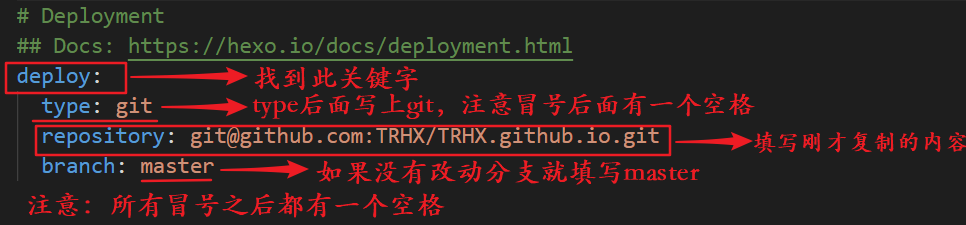

第一篇个人博客，记录一下整个下午搭建博客的流程。
第一步：注册GitHub,在GitHub上新建仓库，settings配置GitHub Pages
第二步：安装git和node.js
第三步：安装hexo,使用hexo写页面
安装hexo
选择一个磁盘，新建一个文件夹，自己重命名文件夹（如：我的文件夹为：F\hexo_blog），博客相关文件将储存在此文件夹下，在该文件夹下右键鼠标，点击 Git Bash Here，输入以下 npm 命令即可安装，第一个命令表示安装 hexo，第二个命令表示安装 hexo 部署到 git page 的 deployer
1 | $ npm install hexo-cli -g |
hexo初始化配置
在刚才新建的文件夹里面再次新建一个 hexo 文件夹（如：我的文件夹为：F\hexo_blog\hexo）,进入该 hexo 文件夹右键鼠标，点击 Git Bash Here，输入以下命令
1 | $ hexo init |
本地运行hexo测试
输入以下命令
1 | $ hexo g |
登录 http://localhost:4000/ 查看效果
第四步：本地Git链接GitHub，将本地仓库上传到GitHub
配置SSH秘钥
只有配置好 SSH 密钥后，我们才可以通过 git 操作实现本地代码库与 Github 代码库同步，在你第一次新建的文件夹里面（如：我的文件夹为：Ｅ\TRHX_Blog） Git Bash Here 输入以下命令：
1 | $ ssh-keygen -t rsa -C "your email@example.com" |
生成的秘钥在/c/Users/you/.ssh/id_rsa. 和/c/Users/you/.ssh/id_rsa.pub.
在 GitHub 账户中添加你的公钥
登录GitHub点击Settings再点击SSH and GPG keys选择New SSH key然后粘贴秘钥Title可以随便写，id_rsa粘贴到Key中，点击Add SSH key
测试
输入以下命令：
1 | $ ssh -T git@github.com |
配置 Git 个人信息
输入以下命令：
1 | $ git config --global user.name "此处填你的用户名" |
到此为止 SSH Key 配置成功，本机已成功连接到 Github
将本地的 Hexo 文件更新到 Github 的库中
① 登录 Github 打开自己的项目 你的名字.github.io（如：northeastman.github.io）
② 鼠标移到 Clone or download 按钮，选择 Use SSH
③ 一键复制地址
④ 打开你创建的 Hexo 文件夹（如：F\hexo_blog\hexo），右键用记事本（Notepad++或者VS code等都可以）打开该文件夹下的 _config.yml 文件
⑤ 按下图修改 _config.yml 文件并保存

⑥ 在 Hexo 文件夹下分别执行以下命令
输入以下命令：
1 | $ hexo g -d |
⑦ 访问博客
你的博客地址：https://你的用户名.github.io，比如我的是：https://northeastman.github.io ,现在每个人都可以通过此链接访问你的博客了